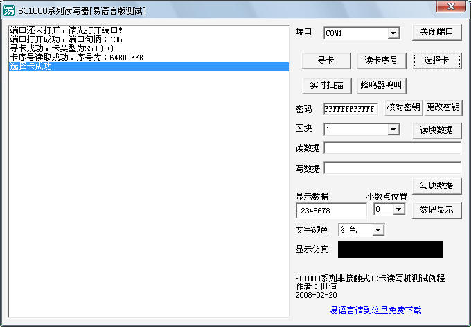

SC系列读写机易语言版操作教程
* 该例程针对"SC1023系列读写机"为例进行详解
（一）制作
1.制作时的注意事项
由于SC1023系列读写机的开发主要是对开发函数的实际调用，所以要结合函数中的一些说明对程序进行设计。因此在设计中在“组合框_区块”中要添加的数字为0-63，而LED显示函数则明确规定能显示的文本为“0、1、2、3、4、5、6、7、8、9、A、B、C、D、E、F、b、c、H、h、L、n、N、o、P、P、r、t、U、-、=、y、j”等 ，这需要在设计例程的时候结合附带的开发函数说明，从而实现读写机的功能。
2.程序的开发及功能的实现
⑴程序界面的设计
按照（图1）所示在启动窗口中添加必要的组件，完成主界面的设计。图中箭头所指的时钟在程序中用来完成实时扫描的功能，画板用来对应显示读卡机上LED显示屏中所显示的内容，超级链接框用来连接相应的下载资源。界面中的按钮都为普通按钮，添加的四个组合框用来实现操作时候的选择，左边的列表框用来同步显示操作进行的结果。卡密匙初始为12个F,所以在这里我们直接添加到相应的编辑框中，而画板中则对应的添加LED显示函数所指定可以显示的内容，这里我们以0-9的数字为例 。
图1
⑵主程序的设计（具体的代码请参考相关例程）
为了在程序的编写中可以方便的使用一些资源和调用读写机开发的函数，我们要先进行些前期的准备工作。
首先，我们要把程序开发中所需要使用的资源进行调入，如（图2-1）所示。
图2-1
具体操作是按回车键，然后在“图片或图片组名称”中键入资源在程序中使用时的名称，然后在“内容”里空格调出“图片或图片组资源属性”窗口，如（图2-2）。
图2-2
资源的导入根据实际的需要而来，操作的步骤则如上述，导入多个资源只需要重复以上步骤即可，操作后效果如（图2-3）。
图2-3
接着我们来将需要使用的函数作为DLL文件进行调入，我们以“读块数据”函数为例进行讲解，具体的操作方法如下 。
①右键单击“DLL命令”，选择“插入新DLL命令”，右边会弹出DLL编辑器，如（图3-1）。
图3-1
②在“DLL命令名”中输入我们在程序中使用时的名称，这里我们输入“读块数据”作为例子，在“DLL库文件名”中我们输入该函数所调用的动态链接库名称，因为我们在资源导入中已经导入了这个动态链接库并进行了创建（具体请参考例程），所以我们这里写入“SCDLL32.dll”，而在“在DLL库中对应命令名”中我们写入该函数位置，之后我们为该链接库写入对应的参数（具体的参数配置请参考开发函数），以上具体的操作如（图3-2） 。
图3-2
添加多个函数请重复上面的操作即可。
下面我们就进行主程序的编写，这里主要的就是对各个函数的使用。
（1）主程序中带主要的子程序的编写
①“__启动窗口_创建完毕”子程序的编写
这个子程序主要实现的程序运行的初始为以后程序的具体功能的实现提供一些必要的准备，如在组合框中添加选择内容等。在这里我们需要用“计次循环”命令将组合框中的内容添加进去，同时检查并创建动态链接库文件，为以后的操作做准备，相关的代码如（图4-1） 。
图4-1
② “子程序_消息显示”的编写
新建子程序“子程序_消息显示”，这个子程序主要用于将读写机的各项操作结果显示在列表框中，使得程序的运行一目了然。具体的代码如（图4-2） 。
图4-2
③ “子程序_显示数据”的编写
新建子程序“子程序_显示数据”，这个程序主要用于将“编辑框_数码显示”中所想要显示的数据，正确的显示在画板上 ，相关的代码如（图4-3）。
图4-3
除以上3个主要的子程序外，还有几个带有辅助功能的子程序，主要用于涉及显示数据的颜色，小数点的位置等的操作，具体的请参考相关例程，里面有详细的介绍。
（2）主程序中函数的调用及功能的实现
①“打开端口”功能的实现
双击“按钮_打开端口”，进入编辑界面，在代码中调入相关的DLL，调用“子程序_消息显示”用以显示操作的结果 ，并且相应的改变按钮的标题，以方便下一步的操作。相关的主要代码如（图5-1）。
图5-1
这样，当我们程序运行的时候，我们只要选择想要打开的端口，然后点击“打开端口”，这时列表框就会相应的显示出操作的结果 ，同时“按钮_打开端口”的标题会变成“关闭端口”，以便进行关闭端口的操作，如（图5-2）。
图5-2
②“寻卡”功能的实现
双击“按钮_寻卡”，进入编辑界面，在代码中调入相关的DLL，调用“子程序_消息显示”用以显示操作的结果，相关代码如（图6-1） 。
图6-1
当我们运行程序的时候，只要单击按钮“寻卡”，相应的操作结果就会显示在列表框上，如（图6-2） 。

图6-2
③“读卡序号”功能的实现
双击“按钮_读卡序号”，进入编辑界面，在代码中调入相关的DLL，调用“子程序_消息显示”用以显示操作的结果，相关代码如（图7-1） 。
图7-1
运行程序后，单击按钮“读卡序号”，相应的结果就会显示在列表框上，如（图7-1）。
图7-2
④“选择卡”功能的实现
双击“按钮_选择卡”，进入编辑界面，在代码中调入相关的DLL，调用“子程序_消息显示”用以显示操作的结果，相关代码如（图8-1） 。
图8-1
运行程序，单击按钮“选择卡”，相应的结果就会显示在列表框上，如（图8-2）。

图8-2
⑤“实时扫描”功能的实现、
双击“按钮_实时扫描”，进入编辑界面，由于“实时扫描”功能相当与自动的去实现“寻卡”、“读卡序号”、“选择卡”、“读块数据”等内容，所以在这里我们要将上述的子程序或者函数一一调用，其中关键的调用在于子程序“读块数据”，然后同样的用“子程序_消息显示”显示操作的结果，在这个程序中，“按钮_实时扫描”的标题也会变为“停止扫描”，以便以后的操作 。在这里，主要是通过“时钟”控件来实现“实时扫描”的循环发生，相关子程序的调用其实是在“时钟周期”事件下发生，然后再在“实时扫描”中给予时钟一定的周期，从而实现。相关的代码如（图9-1，图9-2）所示 。
图9-1
图9-2
这样，我们只要单击“实时扫描”按钮，就能自动的实现多种功能，达到方便的目的，具体的操作如（图9-3） 。
图9-3
⑥“蜂鸣器鸣叫”功能的实现
双击“按钮_蜂鸣器鸣叫”，进入编辑界面，在代码中调入相关的DLL，调用“子程序_消息显示”用以显示操作的结果，相关代码如（图10-1） 。
图10-1
这个功能单独使用的时候基本没有意义，只是让读写机鸣响一下，所以一般都是结合别的功能一起实现，以达到提醒操作者操作的目实时扫描”功能的结合。
⑦“核对密匙”及“更改密匙”功能的实现
我们分别双击“按钮_核对密匙”和“按钮_更改密匙”，进入程序编辑界面，调入相应的DLL，然后通过调用“子程序_消息显示”将操作的结果表示在列表框上，相关的代码如（图11-1核对密匙和图11-2更改密匙） 。
图11-1核对密钥
图11-2更改密钥
当我们运行程序后，如果我们要“核对密匙”，请先进行“寻卡”和“选择卡”的操作，然后选择想要操作的块区，在填写密码的位置上输入密匙，再进行“核对密匙”的操作。如果是需要“更改密匙”，那么请先按上述的步骤进行“核对密匙”，然后输入想要更改后的密匙，再点击“更改密匙”按钮，以便实现功能 ，相关操作如下图12所示。
图12
⑧“读块数据”和“写块数据”功能的实现
分别双击“按钮_读块数据”和“按钮_写块数据”，在编辑界面中调入相应的DLL,并且调用别的子程序与之结合，从而使读写功能得到实现，相关代码如（图13-1读块数据）和（图13-2写块数据） 。
图13-1读块数据
图13-2写块数据
运行程序之后，选择想要读写的块区，在编辑框中输入该块区的密匙（默认为12个“F”，如果更改了密匙，请牢记），如果你要实现“写块数据”的功能，请在相应的输入编辑框中键入你要写入的数据（注意该数据是16字节块数据），如（图13-4）。如果是“读块数据”，读出的数据就会显示在相应的编辑框以及列表框中，如（图13-3） 。
图13-3读块数据
图13-4写块数据
⑨“LED显示”功能的实现
双击“数码显示”按钮，进入编辑界面，调入相应的DLL，并且调用“子程序_显示数据”，因为DLL所实现的功能只是让数据在读写机的LED屏幕上显示，而我们这里还需要在程序运行的时候在相应的画板中显示出来，相关的代码如（图14-1） 。
图14-1
这里我们还需要说明的一点是，我们可以在选择小数点显示位置以及显示数据颜色的子程序中调用“数码显示”这个子程序，这样当我们进行选择操作的时候 ，显示结果会实时的反应出来，相关代码如（图14-2）。
图14-2
我们运行程序，在“编辑框_显示数据”中输入想要显示的数据（请注意，函数已经明确规定了所能显示的数据，并且我们在程序中已经对此做了限制，除规定的数据外，编辑框不能写入其他数据，具体请参考例程），然后单击“数据显示”按钮，相应的内容就会显示在读写机的LED屏幕以及程序的相关位置。而如果你对小数点的位置及数据的显示颜色进行了操作，相应的效果也会马上显示出来 ，如（图143）。
图14-3
读写机上LED屏幕的显示效果如下图。
以上是对程序编写的介绍，具体的请参照相关的例程以及开发所提供的函数说明。
（二）操作时的注意事项
1.磁卡的有效读写距离为6cm，所以操作时请注意不要超过这个范围，否则会出现“错误”提示。
2.“打开端口”是所有操作的前提。
3.在进行“读卡序号”或者“选择卡”的操作之前，请先进行“寻卡”操作。
4.在进行“核对密匙”前，请先进行“寻卡”和“选择卡”操作。在进行“更改密匙”前请先“核对密匙”。
5.如果在编写“读块数据”和“写块数据”代码的时候，如果没有调用“寻卡”“读卡序号”“选择卡”以及“核对密匙”的子 程序，请按照正确的步骤，一步步的操作，步骤如下“寻卡”――“读卡序号”――“选择卡”――“核对密匙”――“读/写块数据”。
6.在进行块区操作的时候，请选择想操作的块区，并输入正确的块区密匙，以便进行“核对密匙”操作。